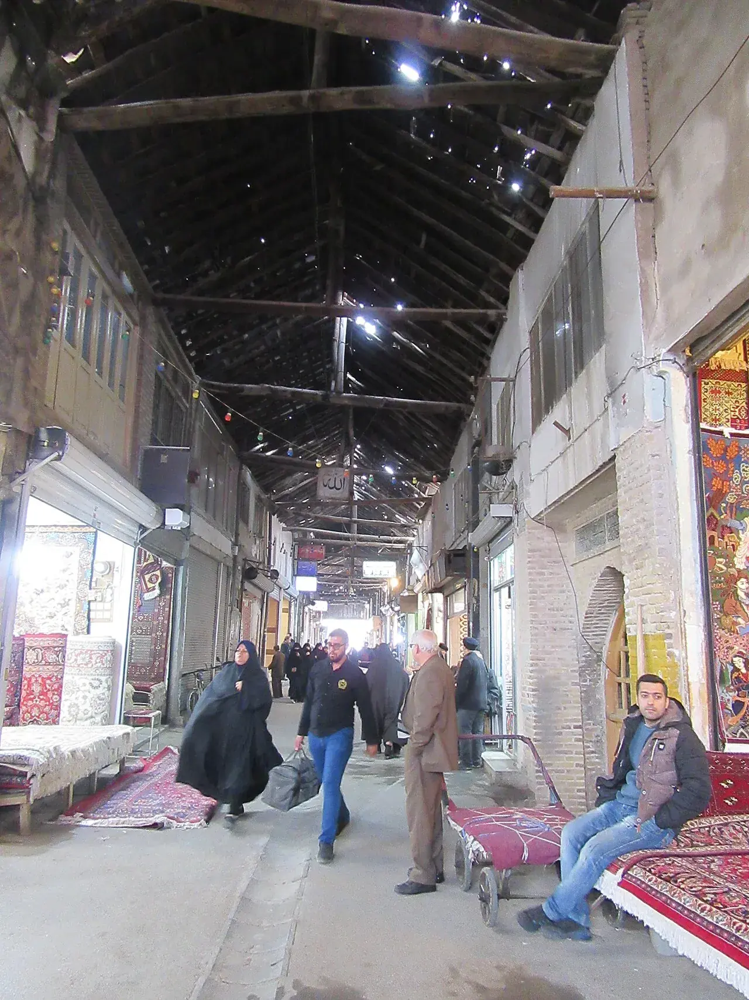

دليل السفر إلى مشهد · الأماكن السياحية في مشهد، ماذا تزور في مشهد، أسواق مشهد، معالم مشهد
ماذا تزور في مشهد بعد الحرم؟
الإجابة المختصرة
يمكنك تنظيم وقتك في مشهد وفق مدة الإقامة وما تفضله: تخصيص وقت أكبر للزيارة، أو إضافة جولة في الأسواق والمعالم مع فترات للراحة والتنقل. ابدأ بالأولويات، ثم تحقق قبل الذهاب من إمكانية الوصول وساعات العمل، لأن التفاصيل قد تتغير.
تختلف رحلة كل زائر إلى مشهد؛ فبعضهم يفضل تخصيص معظم الوقت للزيارة، وآخرون يريدون التعرف على المدينة وأسواقها ومعالمها أيضاً. ابدأ بما يناسب هدفك ومدة إقامتك، ثم تحقق من المعلومات الحالية قبل بناء البرنامج النهائي.

ابدأ بما يهمك
إذا كانت الزيارة الدينية هي الأولوية، فاجعل بقية الأنشطة اختيارية ولا تدع التنقل يضغط على وقت الزيارة والراحة. أما إذا كان لديك يوم إضافي، فيمكنك اختيار معلم ثقافي أو سوق أو مساحة ترفيهية مناسبة لأسرتك بعد التحقق من التفاصيل.
رتّب الأنشطة بحسب المنطقة الجغرافية لتقليل التنقل غير الضروري، ولا تضع محطات متباعدة في وقت قصير.
الأسواق والتسوق
قبل الذهاب إلى أي سوق، تحقق من موقعه وساعات العمل وطريقة الوصول. حدّد ما ترغب في شرائه وميزانيتك، وقارن الأسعار والجودة، واطلب فاتورة عند الحاجة.
إذا كنت تشتري منتجات غذائية أو هدايا، فتحقق من قواعد نقلها إلى بلدك وشروط الأمتعة. لا تفترض أن كل منتج مسموح بإدخاله عبر الحدود.
المعالم الثقافية والرحلات القريبة
يمكن أن تكون المواقع الثقافية خارج مركز المدينة خياراً لمن يملك وقتاً كافياً، لكن يجب التحقق من المسافة، ووقت الرحلة، وساعات العمل، وحالة الطريق من مصادر حديثة.
إذا كانت لديك مواعيد عودة أو علاج أو ترتيبات عائلية، فاختر نشاطاً يمكن إلغاؤه أو تعديله بسهولة بدلاً من خطة ضيقة.
كيف تتحقق من المعلومات؟
اعتمد على الموقع الرسمي للمعلم أو الجهة المشغلة عندما تكون ساعات العمل أو الرسوم أو قواعد الدخول مهمة. يمكن أن تساعد الخرائط في فهم الموقع، لكنها لا تغني عن التأكد من الإغلاق المؤقت أو تغير الإجراءات.
اسأل عن احتياجات الوصول واللغة والخدمات المتاحة إذا كانت هذه التفاصيل مؤثرة في قرارك.
جدول مقارنة سريع لأنشطة العائلة في مشهد
يساعدك هذا الملخص على توزيع الجولات الترفيهية والثقافية دون تزاحم مع أوقات الزيارة:
| نوع النشاط | أمثلة محاور رئيسية | المدة المقترحة والأنسب | ملاحظة تنسيقية |
|---|---|---|---|
| الأسواق التراثية والجملة | بازار رضا، إيثار للعبايات، شارع وحيد للشنط، فردوسي | ساعتان إلى ٣ ساعات — أسواق هدايا وملابس | راجع خريطة التفصيل في أسواق مشهد وإيثار وفردوسي ودليل زعفران قائنات والزرشك. |
| المولات والحدائق المائية | ألماس شرق، بروميه، موج هاي آبي وخروشان وآفتاب | نصف يوم — مناسب للعائلات والأطفال طوال العام | اقرأ دليل الحدائق المائية المغلقة ودليل المولات والشاليهات. |
| الضواحي والمصايف والشيشليك | طرقبه، شانديز، جاغرق، زشك، مطعم معين درباري | نصف يوم إلى يوم — مناسب للغداء العائلي والهواء الجبلي | تصفّح مصايف طرقبه وشانديز ومطاعم الشيشليك وبوظة دقت أو اطلب سائقاً عربياً. |
| ركوب الخيل | جولة خاصة في موقع يحدده مقدم الخدمة حول مشهد | بحسب المسار وشروط المكان وملاءمة المشاركين | استفسر عن جولة ركوب الخيل الخاصة وتحقق من العمر ومعدات السلامة والتوفر. |
| المنتزهات والمسارات الجبلية | حديقة ملت، كوهسنگي، وکیل آباد، بام خورشيد، كوهپارك | ساعتان إلى ٣ ساعات — مساءً أو صباحاً | راجع التفاصيل والمواصلات في دليل منتزهات مشهد والمشي الجبلي ودليل المتاحف. |
الخطوة التالية
إذا أردت إضافة أنشطة إلى برنامج الزيارة، حدد عدد الأيام والأماكن التي تهمك، ثم اطلع على نماذج البرامج والخدمات المتاحة للتنسيق.
توزيع الأنشطة خارج ساعات الحرم
لتنظيم يوم متوازن يجمع السياحة الهادئة وزيارة الحرم، وزّع زياراتك بين المتاحف والمعالم التراثية، ورحلات طرقبه وشانديز وتوس، واختيارات الطعام الآمن في دليل الطعام في مشهد، وشراء التذكارات الموثوقة وفق دليل الهدايا والجمارك، مع إمكانية جدولة الأيام في برنامج ٣ أيام أو عبر خدمات التنسيق.